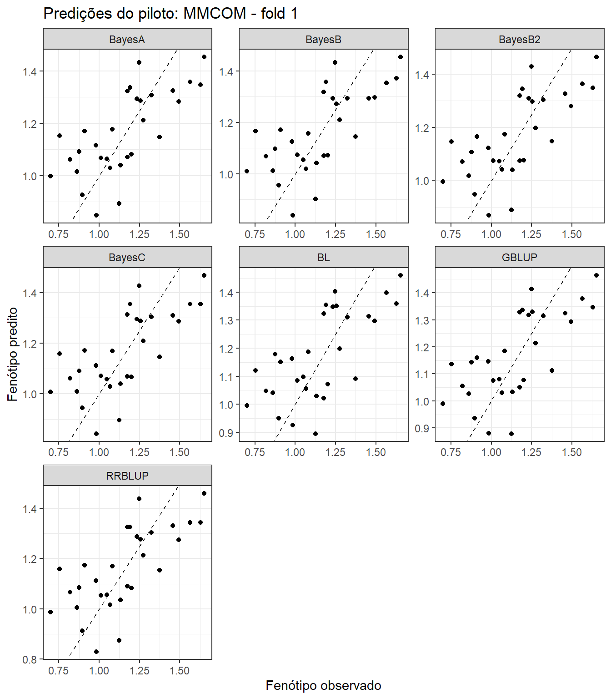

Last updated: 2026-08-05
Checks: 7 0
Knit directory:
Bayesian-ridge-regression-papaya/
This reproducible R Markdown analysis was created with workflowr (version 1.7.2). The Checks tab describes the reproducibility checks that were applied when the results were created. The Past versions tab lists the development history.
Great! Since the R Markdown file has been committed to the Git repository, you know the exact version of the code that produced these results.
Great job! The global environment was empty. Objects defined in the global environment can affect the analysis in your R Markdown file in unknown ways. For reproduciblity it’s best to always run the code in an empty environment.
The command set.seed(20260717) was run prior to running
the code in the R Markdown file. Setting a seed ensures that any results
that rely on randomness, e.g. subsampling or permutations, are
reproducible.
Great job! Recording the operating system, R version, and package versions is critical for reproducibility.
Nice! There were no cached chunks for this analysis, so you can be confident that you successfully produced the results during this run.
Great job! Using relative paths to the files within your workflowr project makes it easier to run your code on other machines.
Great! You are using Git for version control. Tracking code development and connecting the code version to the results is critical for reproducibility.
The results in this page were generated with repository version 775643a. See the Past versions tab to see a history of the changes made to the R Markdown and HTML files.
Note that you need to be careful to ensure that all relevant files for
the analysis have been committed to Git prior to generating the results
(you can use wflow_publish or
wflow_git_commit). workflowr only checks the R Markdown
file, but you know if there are other scripts or data files that it
depends on. Below is the status of the Git repository when the results
were generated:
Ignored files:
Ignored: .Rproj.user/
Ignored: .github/
Ignored: code/
Ignored: data/Bayesiana goiaba Eileen SReport.pdf
Ignored: module03_pilot_seven_methods.zip
Ignored: output/bglr_runs/
Ignored: output/figures/
Ignored: output/matrices/
Ignored: output/models/
Ignored: output/preprocessing/
Ignored: output/tables/
Ignored: papaya_documentation_contract_v1.zip
Ignored: papaya_module01_phenotype_audit_v1.zip
Ignored: papaya_module02_unique_matrices_v1.zip
Ignored: renv/library/
Ignored: renv/staging/
Ignored: tests/
Note that any generated files, e.g. HTML, png, CSS, etc., are not included in this status report because it is ok for generated content to have uncommitted changes.
These are the previous versions of the repository in which changes were
made to the R Markdown (analysis/03_models_pt.Rmd) and HTML
(docs/03_models_pt.html) files. If you’ve configured a
remote Git repository (see ?wflow_git_remote), click on the
hyperlinks in the table below to view the files as they were in that
past version.
| File | Version | Author | Date | Message |
|---|---|---|---|---|
| Rmd | 775643a | WevertonGomesCosta | 2026-08-05 | feat: add seven-method BGLR pilot |
| Rmd | c54495b | WevertonGomesCosta | 2026-07-23 | refactor: simplify workflowr tutorial structure |
Este módulo valida inicialmente o contrato de ajuste dos modelos com
uma característica e um fold da validação cruzada. O piloto utiliza
MMCOM e o fold 1.
Sete métodos de predição genômica são ajustados exclusivamente com o BGLR (Pérez and Campos 2014):
BRR do BGLR e a
matriz completa de marcadores M;M;M;M e a probabilidade de efeito zero mantida
operacionalmente próxima de \(10^{-5}\);M;M;G e o
componente RKHS do BGLR.RR-BLUP e regressão ridge Bayesiana não são ajustados como modelos
separados. O modelo Gaussiano para os efeitos dos marcadores,
implementado por model = "BRR", é adotado como a
implementação do RR-BLUP.
O piloto verifica a execução do código, o mascaramento dos fenótipos, a estrutura das saídas, a finitude das predições, as métricas preditivas e o parâmetro de probabilidade do BayesB2. Ele não será utilizado para conclusões biológicas.
O BGLR inclui um intercepto por padrão e aceita valores ausentes no
vetor fenotípico. Portanto, a coluna do intercepto é removida de
X antes que as colunas restantes de bloco e família sejam
fornecidas como efeitos fixos. Em cada fold, apenas os fenótipos de
validação são substituídos por NA; X,
M e G permanecem inalteradas.
O artigo de referência define o BayesB2 com \(\pi=10^{-5}\) como a probabilidade de
efeito zero do marcador (Silva et al. 2021). No BGLR,
probIn é a probabilidade de efeito diferente de zero.
Assim, o BayesB2 utiliza probIn = 1 - 1e-5. Como o BGLR
amostra essa probabilidade, uma priori beta extremamente concentrada
(counts = 1e6) é utilizada para mantê-la operacionalmente
fixa no valor de referência.
suppressPackageStartupMessages({
library(BGLR)
library(dplyr)
library(ggplot2)
library(knitr)
library(here)
})MATRICES_FILE <- here(
"output",
"matrices",
"matrices_object.rds"
)
OUTPUT_DIR <- here(
"output",
"models",
"pilot"
)
PILOT_TRAIT <- "MMCOM"
PILOT_FOLD <- 1L
PILOT_N_ITER <- 12000L
PILOT_BURN_IN <- 2000L
PILOT_THIN <- 10L
BAYESB2_ZERO_PROBABILITY <- 1e-5
BAYESB2_PROB_IN <-
1 - BAYESB2_ZERO_PROBABILITY
BAYESB2_COUNTS <- 1e6
dir.create(
OUTPUT_DIR,
recursive = TRUE,
showWarnings = FALSE
)O piloto utiliza menos iterações do que a análise final. Após a aprovação do contrato dos modelos, a análise completa utilizará as configurações do artigo de referência: 1.000.000 de iterações, 200.000 iterações de burn-in e thinning igual a 4 (Silva et al. 2021).
matrices_object <- readRDS(
MATRICES_FILE
)
ids <- matrices_object$ids
X <- matrices_object$X
M <- matrices_object$M
G <- matrices_object$G
phenotypes <- matrices_object$phenotypes
cv_folds <- matrices_object$cv_folds
X_fixed <- X[
,
colnames(X) != "(Intercept)",
drop = FALSE
]
y_observed <- phenotypes[
,
PILOT_TRAIT
]
validation_index <- which(
cv_folds$Fold == PILOT_FOLD
)
training_index <- which(
cv_folds$Fold != PILOT_FOLD
)
y_model <- y_observed
y_model[validation_index] <- NA_real_input_audit <- data.frame(
Check = c(
"Indivíduos",
"Colunas de efeitos fixos fornecidas ao BGLR",
"Colunas de marcadores",
"Linhas e colunas de G",
"Fenótipos de treinamento observados",
"Fenótipos de validação mascarados",
"Indivíduos de validação",
"Indivíduos de treinamento",
"Nomes das linhas de X alinhados aos IDs",
"Nomes das linhas de M alinhados aos IDs",
"Nomes das linhas de G alinhados aos IDs",
"Nomes das colunas de G alinhados aos IDs"
),
Value = c(
length(ids),
ncol(X_fixed),
ncol(M),
paste(dim(G), collapse = " x "),
sum(!is.na(y_model)),
sum(is.na(y_model)),
length(validation_index),
length(training_index),
identical(rownames(X), ids),
identical(rownames(M), ids),
identical(rownames(G), ids),
identical(colnames(G), ids)
)
)
kable(
input_audit,
caption = "Auditoria das entradas do piloto"
)| Check | Value |
|---|---|
| Indivíduos | 150 |
| Colunas de efeitos fixos fornecidas ao BGLR | 18 |
| Colunas de marcadores | 72 |
| Linhas e colunas de G | 150 x 150 |
| Fenótipos de treinamento observados | 120 |
| Fenótipos de validação mascarados | 30 |
| Indivíduos de validação | 30 |
| Indivíduos de treinamento | 120 |
| Nomes das linhas de X alinhados aos IDs | TRUE |
| Nomes das linhas de M alinhados aos IDs | TRUE |
| Nomes das linhas de G alinhados aos IDs | TRUE |
| Nomes das colunas de G alinhados aos IDs | TRUE |
model_catalogue <- data.frame(
Method = c(
"RR-BLUP",
"BayesA",
"BayesB",
"BayesB2",
"BayesC",
"Lasso Bayesiano",
"GBLUP"
),
BGLR_component = c(
"BRR",
"BayesA",
"BayesB",
"BayesB",
"BayesC",
"BL",
"RKHS"
),
Genomic_input = c(
"M",
"M",
"M",
"M",
"M",
"M",
"G"
),
Main_assumption = c(
"Variância Gaussiana comum para todos os efeitos dos marcadores",
"Variâncias t escaladas específicas por marcador",
"Componente t escalado e massa pontual em zero",
"BayesB com probabilidade de efeito zero próxima de 1e-5",
"Componente Gaussiano comum e massa pontual em zero",
"Priori marginal duplo-exponencial",
"Valores genômicos estruturados por G"
)
)
kable(
model_catalogue,
caption = "Sete métodos de predição genômica no piloto"
)| Method | BGLR_component | Genomic_input | Main_assumption |
|---|---|---|---|
| RR-BLUP | BRR | M | Variância Gaussiana comum para todos os efeitos dos marcadores |
| BayesA | BayesA | M | Variâncias t escaladas específicas por marcador |
| BayesB | BayesB | M | Componente t escalado e massa pontual em zero |
| BayesB2 | BayesB | M | BayesB com probabilidade de efeito zero próxima de 1e-5 |
| BayesC | BayesC | M | Componente Gaussiano comum e massa pontual em zero |
| Lasso Bayesiano | BL | M | Priori marginal duplo-exponencial |
| GBLUP | RKHS | G | Valores genômicos estruturados por G |
ETA_models <- list(
RRBLUP = list(
fixed = list(
X = X_fixed,
model = "FIXED"
),
genomic = list(
X = M,
model = "BRR"
)
),
BayesA = list(
fixed = list(
X = X_fixed,
model = "FIXED"
),
genomic = list(
X = M,
model = "BayesA"
)
),
BayesB = list(
fixed = list(
X = X_fixed,
model = "FIXED"
),
genomic = list(
X = M,
model = "BayesB"
)
),
BayesB2 = list(
fixed = list(
X = X_fixed,
model = "FIXED"
),
genomic = list(
X = M,
model = "BayesB",
probIn = BAYESB2_PROB_IN,
counts = BAYESB2_COUNTS
)
),
BayesC = list(
fixed = list(
X = X_fixed,
model = "FIXED"
),
genomic = list(
X = M,
model = "BayesC"
)
),
BL = list(
fixed = list(
X = X_fixed,
model = "FIXED"
),
genomic = list(
X = M,
model = "BL"
)
),
GBLUP = list(
fixed = list(
X = X_fixed,
model = "FIXED"
),
genomic = list(
K = G,
model = "RKHS"
)
)
)Cada método recebe uma semente determinística e um prefixo de arquivo
distinto. As observações de validação permanecem ausentes de
y_model durante o ajuste.
model_names <- names(
ETA_models
)
method_seeds <- setNames(
202608051L + seq_along(model_names) - 1L,
model_names
)
pilot_fits <- vector(
mode = "list",
length = length(model_names)
)
names(pilot_fits) <- model_names
prediction_parts <- vector(
mode = "list",
length = length(model_names)
)
metric_parts <- vector(
mode = "list",
length = length(model_names)
)
for (method_index in seq_along(model_names)) {
method_name <- model_names[method_index]
set.seed(
method_seeds[method_name]
)
fit_start <- proc.time()[["elapsed"]]
pilot_fits[[method_name]] <- BGLR::BGLR(
y = y_model,
ETA = ETA_models[[method_name]],
response_type = "gaussian",
nIter = PILOT_N_ITER,
burnIn = PILOT_BURN_IN,
thin = PILOT_THIN,
saveAt = file.path(
OUTPUT_DIR,
paste0(
"pilot_",
method_name,
"_"
)
),
verbose = FALSE,
rmExistingFiles = TRUE
)
fit_end <- proc.time()[["elapsed"]]
predicted_validation <-
pilot_fits[[method_name]]$yHat[
validation_index
]
observed_validation <-
y_observed[
validation_index
]
prediction_parts[[method_index]] <- data.frame(
IND = ids[validation_index],
Trait = PILOT_TRAIT,
Fold = PILOT_FOLD,
Method = method_name,
Observed = observed_validation,
Predicted = predicted_validation
)
metric_parts[[method_index]] <- data.frame(
Trait = PILOT_TRAIT,
Fold = PILOT_FOLD,
Method = method_name,
Validation_n = length(validation_index),
Correlation = cor(
observed_validation,
predicted_validation
),
RMSE = sqrt(
mean(
(
observed_validation -
predicted_validation
)^2
)
),
MAE = mean(
abs(
observed_validation -
predicted_validation
)
),
DIC =
pilot_fits[[method_name]]$fit$DIC,
Effective_parameters =
pilot_fits[[method_name]]$fit$pD,
Log_likelihood_at_posterior_mean =
pilot_fits[[method_name]]$fit$
logLikAtPostMean,
Residual_variance =
pilot_fits[[method_name]]$varE,
Elapsed_seconds =
fit_end - fit_start,
Finite_predictions = all(
is.finite(
predicted_validation
)
)
)
}pilot_predictions <- do.call(
rbind,
prediction_parts
)
pilot_metrics <- do.call(
rbind,
metric_parts
)
rownames(pilot_predictions) <- NULL
rownames(pilot_metrics) <- NULL
bayesb_probability_audit <- data.frame(
Method = c(
"BayesB",
"BayesB2",
"BayesC"
),
Prior_nonzero_probability = c(
NA_real_,
BAYESB2_PROB_IN,
NA_real_
),
Posterior_nonzero_probability = c(
pilot_fits[["BayesB"]]$ETA$
genomic$probIn,
pilot_fits[["BayesB2"]]$ETA$
genomic$probIn,
pilot_fits[["BayesC"]]$ETA$
genomic$probIn
)
)
rrblup_predictions <- pilot_predictions$Predicted[
pilot_predictions$Method == "RRBLUP"
]
gblup_predictions <- pilot_predictions$Predicted[
pilot_predictions$Method == "GBLUP"
]
rrblup_gblup_audit <- data.frame(
Comparison = "RR-BLUP versus GBLUP",
Prediction_correlation = cor(
rrblup_predictions,
gblup_predictions
),
Maximum_absolute_difference = max(
abs(
rrblup_predictions -
gblup_predictions
)
),
Mean_absolute_difference = mean(
abs(
rrblup_predictions -
gblup_predictions
)
)
)
pilot_audit <- data.frame(
Check = c(
"Métodos ajustados",
"Indivíduos de validação por método",
"Total de linhas de predição",
"Predições finitas",
"Linhas completas de métricas",
"probIn posterior do BayesB2",
"Desvio absoluto de probIn do BayesB2"
),
Expected = c(
"7",
"30",
"210",
"TRUE",
"7",
format(BAYESB2_PROB_IN, digits = 8),
"próximo de 0"
),
Observed = c(
length(model_names),
unique(pilot_metrics$Validation_n),
nrow(pilot_predictions),
all(pilot_metrics$Finite_predictions),
nrow(pilot_metrics),
format(
pilot_fits[["BayesB2"]]$ETA$
genomic$probIn,
digits = 8
),
format(
abs(
pilot_fits[["BayesB2"]]$ETA$
genomic$probIn -
BAYESB2_PROB_IN
),
scientific = TRUE
)
)
)write.csv(
pilot_predictions,
file.path(
OUTPUT_DIR,
"pilot_predictions.csv"
),
row.names = FALSE
)
write.csv(
pilot_metrics,
file.path(
OUTPUT_DIR,
"pilot_metrics.csv"
),
row.names = FALSE
)
write.csv(
bayesb_probability_audit,
file.path(
OUTPUT_DIR,
"pilot_bayesb_probability_audit.csv"
),
row.names = FALSE
)
write.csv(
rrblup_gblup_audit,
file.path(
OUTPUT_DIR,
"pilot_rrblup_gblup_audit.csv"
),
row.names = FALSE
)
write.csv(
pilot_audit,
file.path(
OUTPUT_DIR,
"pilot_execution_audit.csv"
),
row.names = FALSE
)
saveRDS(
list(
fits = pilot_fits,
predictions = pilot_predictions,
metrics = pilot_metrics,
bayesb_probability_audit =
bayesb_probability_audit,
rrblup_gblup_audit =
rrblup_gblup_audit,
execution_audit = pilot_audit,
settings = list(
trait = PILOT_TRAIT,
fold = PILOT_FOLD,
n_iter = PILOT_N_ITER,
burn_in = PILOT_BURN_IN,
thin = PILOT_THIN,
bayesb2_zero_probability =
BAYESB2_ZERO_PROBABILITY,
bayesb2_prob_in =
BAYESB2_PROB_IN,
bayesb2_counts =
BAYESB2_COUNTS,
seeds = method_seeds
)
),
file.path(
OUTPUT_DIR,
"pilot_models_object.rds"
)
)pilot_metrics |>
arrange(
desc(Correlation),
RMSE
) |>
kable(
digits = 6,
caption = "Métricas preditivas e diagnósticos de ajuste do piloto"
)| Trait | Fold | Method | Validation_n | Correlation | RMSE | MAE | DIC | Effective_parameters | Log_likelihood_at_posterior_mean | Residual_variance | Elapsed_seconds | Finite_predictions |
|---|---|---|---|---|---|---|---|---|---|---|---|---|
| MMCOM | 1 | BayesB2 | 30 | 0.705395 | 0.177569 | 0.152514 | 2.549141 | 30.34029 | 29.06572 | 0.047083 | 1.08 | TRUE |
| MMCOM | 1 | BayesA | 30 | 0.703514 | 0.177467 | 0.150892 | 2.005775 | 31.04186 | 30.03897 | 0.046349 | 0.78 | TRUE |
| MMCOM | 1 | BayesC | 30 | 0.699450 | 0.178372 | 0.152187 | 1.932728 | 31.21585 | 30.24948 | 0.046340 | 0.81 | TRUE |
| MMCOM | 1 | RRBLUP | 30 | 0.697737 | 0.178220 | 0.149665 | 1.618356 | 31.83207 | 31.02289 | 0.045774 | 0.86 | TRUE |
| MMCOM | 1 | GBLUP | 30 | 0.694799 | 0.179742 | 0.155705 | 1.971281 | 27.04919 | 26.06355 | 0.048003 | 0.95 | TRUE |
| MMCOM | 1 | BayesB | 30 | 0.693276 | 0.179883 | 0.153721 | 2.331446 | 31.39156 | 30.22583 | 0.046478 | 1.44 | TRUE |
| MMCOM | 1 | BL | 30 | 0.687417 | 0.182132 | 0.159181 | 2.734079 | 24.39409 | 23.02705 | 0.049354 | 1.33 | TRUE |
kable(
bayesb_probability_audit,
digits = 8,
caption = "Auditoria da probabilidade de efeito diferente de zero"
)| Method | Prior_nonzero_probability | Posterior_nonzero_probability |
|---|---|---|
| BayesB | NA | 0.4140403 |
| BayesB2 | 0.99999 | 0.9999892 |
| BayesC | NA | 0.4480326 |
kable(
rrblup_gblup_audit,
digits = 8,
caption = "Comparação diagnóstica das predições de RR-BLUP e GBLUP"
)| Comparison | Prediction_correlation | Maximum_absolute_difference | Mean_absolute_difference |
|---|---|---|---|
| RR-BLUP versus GBLUP | 0.9887153 | 0.05795952 | 0.02004877 |
kable(
pilot_audit,
caption = "Auditoria da execução do piloto"
)| Check | Expected | Observed |
|---|---|---|
| Métodos ajustados | 7 | 7 |
| Indivíduos de validação por método | 30 | 30 |
| Total de linhas de predição | 210 | 210 |
| Predições finitas | TRUE | TRUE |
| Linhas completas de métricas | 7 | 7 |
| probIn posterior do BayesB2 | 0.99999 | 0.99998916 |
| Desvio absoluto de probIn do BayesB2 | próximo de 0 | 8.374689e-07 |
ggplot(
pilot_predictions,
aes(
x = Observed,
y = Predicted
)
) +
geom_point() +
geom_abline(
intercept = 0,
slope = 1,
linetype = 2
) +
facet_wrap(
~ Method,
scales = "free"
) +
labs(
x = "Fenótipo observado",
y = "Fenótipo predito",
title = paste(
"Predições do piloto:",
PILOT_TRAIT,
"- fold",
PILOT_FOLD
)
) +
theme_bw()
O piloto será aprovado para expansão somente quando:
probIn posterior do BayesB2 permanecer extremamente
próximo de 0.99999;Após a aprovação deste critério, o mesmo contrato será expandido para
10 características, 5 folds e 7 métodos, totalizando 350 ajustes. A
análise completa preservará as mesmas matrizes globais X,
M e G e alterará apenas o vetor fenotípico
mascarado.
sessionInfo()R version 4.5.1 (2025-06-13 ucrt)
Platform: x86_64-w64-mingw32/x64
Running under: Windows 11 x64 (build 26200)
Matrix products: default
LAPACK version 3.12.1
locale:
[1] LC_COLLATE=Portuguese_Brazil.utf8 LC_CTYPE=Portuguese_Brazil.utf8
[3] LC_MONETARY=Portuguese_Brazil.utf8 LC_NUMERIC=C
[5] LC_TIME=Portuguese_Brazil.utf8
time zone: America/Sao_Paulo
tzcode source: internal
attached base packages:
[1] stats graphics grDevices datasets utils methods base
other attached packages:
[1] here_1.0.2 knitr_1.51 ggplot2_4.0.3 dplyr_1.2.1
[5] BGLR_1.1.4 workflowr_1.7.2
loaded via a namespace (and not attached):
[1] gtable_0.3.6 jsonlite_2.0.0 compiler_4.5.1 renv_1.2.3
[5] promises_1.5.0 tidyselect_1.2.1 Rcpp_1.1.2 stringr_1.6.0
[9] git2r_0.36.2 callr_3.8.0 later_1.4.8 jquerylib_0.1.4
[13] scales_1.4.0 yaml_2.3.12 fastmap_1.2.0 R6_2.6.1
[17] labeling_0.4.3 generics_0.1.4 MASS_7.3-66 tibble_3.3.1
[21] rprojroot_2.1.1 RColorBrewer_1.1-3 bslib_0.11.0 pillar_1.11.1
[25] rlang_1.3.0 cachem_1.1.0 stringi_1.8.7 httpuv_1.6.17
[29] xfun_0.60 S7_0.2.2 getPass_0.2-4 fs_2.1.0
[33] sass_0.4.10 otel_0.2.0 truncnorm_1.0-9 cli_3.6.6
[37] withr_3.0.3 magrittr_2.0.5 grid_4.5.1 digest_0.6.39
[41] processx_3.9.0 rstudioapi_0.19.0 lifecycle_1.0.5 vctrs_0.7.3
[45] evaluate_1.0.5 glue_1.8.1 farver_2.1.2 whisker_0.4.1
[49] rmarkdown_2.31 httr_1.4.8 tools_4.5.1 pkgconfig_2.0.3
[53] htmltools_0.5.9 Weverton Gomes da Costa, Pós-Doutorando, Departamento de Estatística - Universidade Federal de Viçosa, weverton.costa@ufv.br↩︎